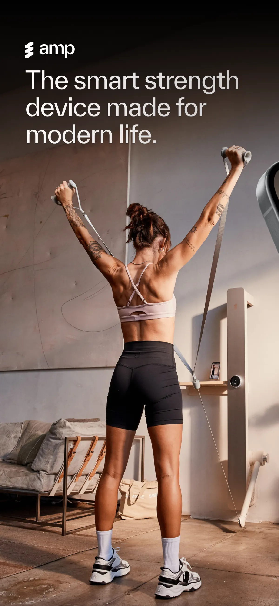
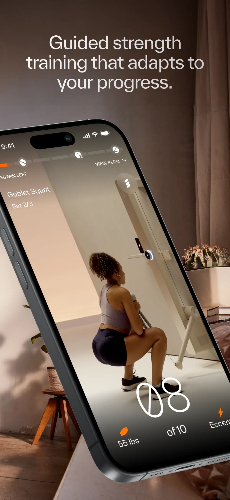
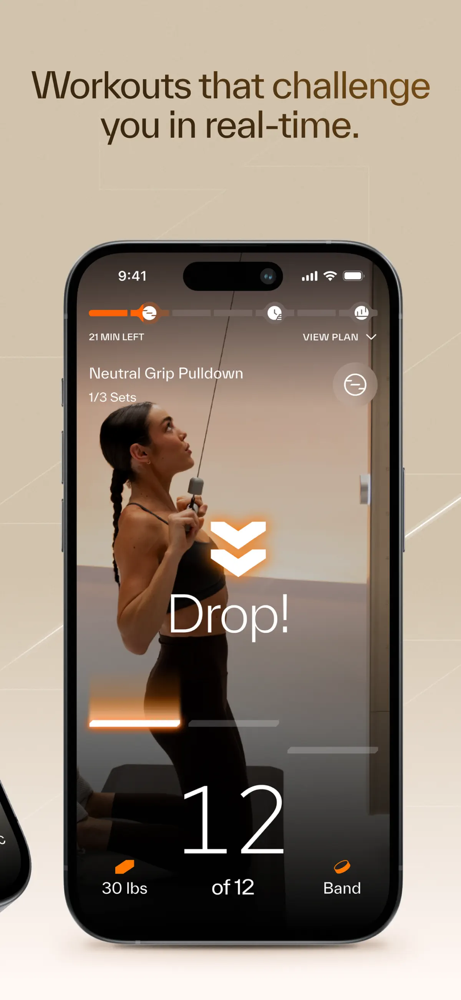
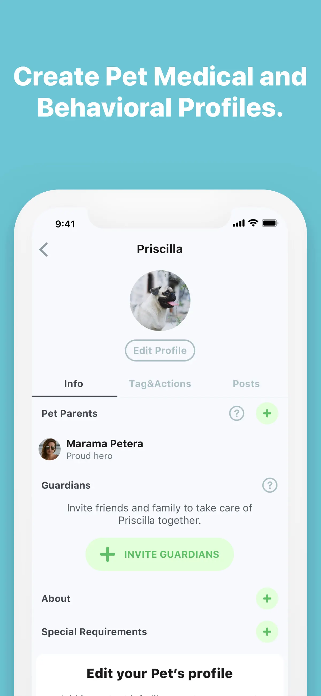
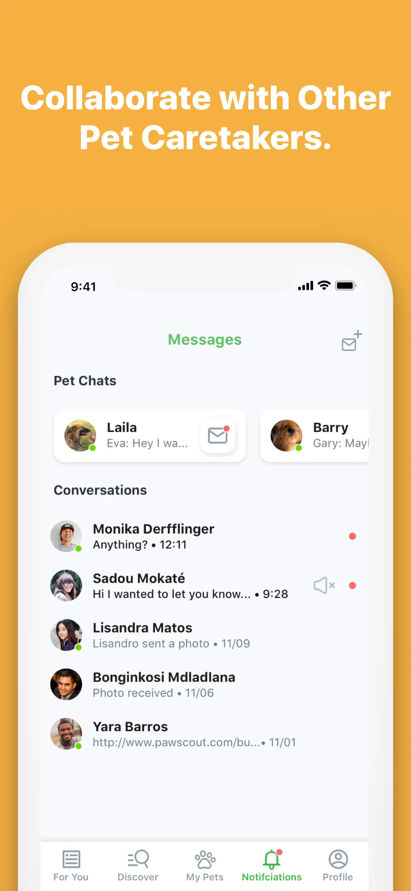
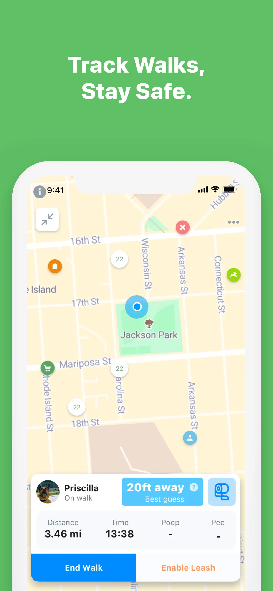

PROFILE
How I work
Senior iOS Engineer building native applications since 2013. I combine hands-on product delivery with long-term ownership of architecture and engineering standards. In technical decisions, I balance the best possible user experience with sound architecture and clean, maintainable code.
End-to-end ownership
I take responsibility from product and design discussions and application architecture selection through implementation, testing, integration and release readiness.
Cross-functional delivery
I work closely with product managers, designers, backend and firmware engineers, translating constraints across disciplines.
Product modernization
I plan migrations across Objective-C, Swift, UIKit and SwiftUI while keeping existing products moving.
CASE STUDY 01 · MAR 2023 - PRESENT
amp · Connected strength training
A native iOS experience for an AI-powered strength-training machine. The application guides workouts, adapts resistance, communicates with the device in real time and connects the physical and digital product into one experience.

MY ROLE
Senior iOS Engineer responsible for architecture and key product areas within an approximately 20-person R&D organization. Six iOS engineers worked across three cross-functional product teams.
Product × mobile × hardware
View amp on the App StoreArchitecture ownership
Key technical decisions, modular boundaries, technology evolution and engineering standards across a multi-team iOS organization.


- 15-month end-to-end ownership of the application's most important user journey.
- Custom SwiftUI/UIKit interface for live, guided strength training.
- Real-time Bluetooth communication between the iPhone and the amp machine.
- GraphQL integration for workout state, content and backend-driven behavior.
AMP · ENGINEERING
Engineering beyond the feature
Application architecture
Defined modular boundaries, data flow and navigation; evaluated libraries and platform technologies.
Technology evolution
Planned the progressive adoption of SwiftUI alongside UIKit and established testing and code-review practices.
Agent-ready engineering
Prepared documentation, agent instructions, conventions, tests and verification workflows for Claude Code and OpenAI Codex.
Broader product contribution
Expanded into backend work to implement AI-powered product features and supporting service logic.
CASE STUDY 02 · JUL 2016 - SEP 2022
Pawscout · Mobile product + smart Bluetooth tag
A consumer pet-safety and community application paired with a Bluetooth-enabled tag. The product combined proximity tracking, walks, virtual leash functionality, pet profiles and social features.
View Pawscout on the App Store


- Started in a two-person iOS team; served as the sole iOS engineer for the final three years.
- Owned mobile architecture, technology selection, development and delivery.
- Built Bluetooth-enabled safety and proximity experiences around a physical tag.
- Planned migrations across Objective-C, Swift, UIKit and SwiftUI.
SELECTED WORK
Selected products
Additional work spanning payments, social products, games, public services and Bluetooth accessories.
Payble
iOS consulting for an Australian payments product.
Elis
Audio-centered social application for saving and sharing thoughts and music.
Finger Hero
Single-touch game featured in App Store's 'Best New Games' in April 2016.
Warszawa Rodzinna
Application created with the City of Warsaw to support access to public-transport discounts.
PJWSTK
Mobile application designed for students of the Polish-Japanese Academy of Information Technology.
BeeWi AudioLink
Bluetooth audio player for BeeWi headphones.